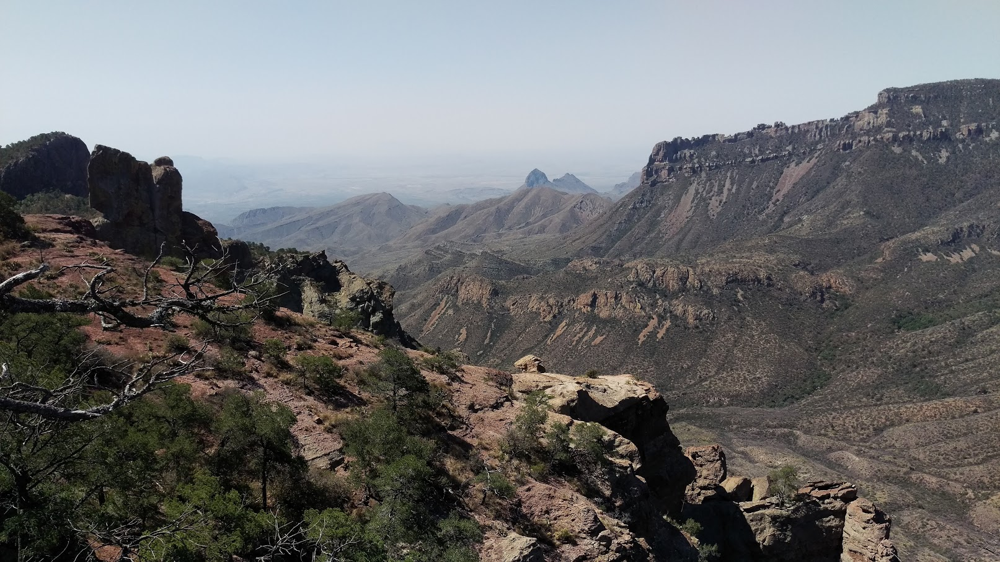
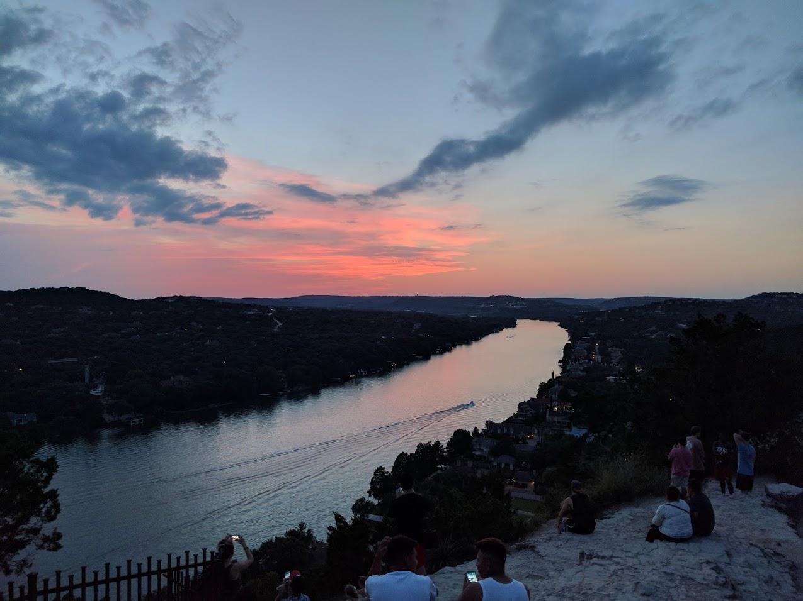

| Lost Mine Trail | |
|---|---|
|  |
This trail is located in Big Bend National Park, TX. It is somewhat long to hike and reach to the top, but really worth it! As you elevate more you can feel the wind blow harder and fresher, it's very nice. Watch out for mountain lions and black bears!(very rare) |
| Santa Elena Trail | |
|---|---|

|
This trail is also located in Big Bend It's the hottest trail in Big Bend! You need lots of water for this one. As you get deeper into the trail scream your name or something and hear the elegant echo through the canyon. |
| Mount Bonnell | |
|---|---|
|  |
Quite an easy trail to hike located in Austin, TX. It's only like 100 steps I think. |